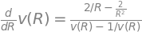
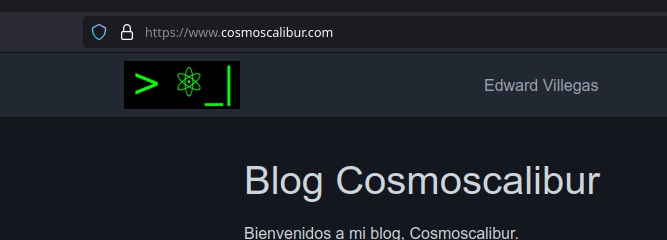
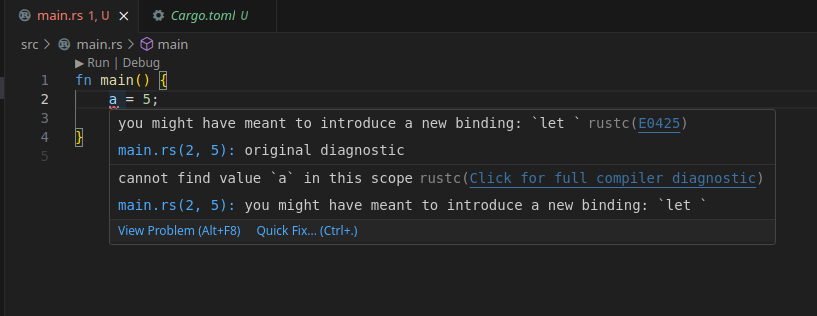

Publicado en 2024
Espiral de Parker con Python
- 2024-10-06
En esta entrada veremos la solución numérica a la ecuación diferencial no lineal de primer orden que modela la velocidad del viento solar en función de la distancia heliocéntrica. Una vez se obtiene este perfil de velocidad, el cual es dependiente de la temperatura se procede a transformar a coordenadas lagrangianas centradas en un punto de emisión sobre la corona. De esta forma será más natural construir un brazo de la espiral de Parker, sobre el cual evoluciona el perfil de velocidad hallado.
Agregar Google Ads en Sphinx
- 2024-09-25
Siguiendo con ajustes en mi blog, algo que quería darle una nueva oportunidad, así algunos lo odien, es a Google Ads y ver esto como permite generar algún ingreso ahora que muchos usamos bloqueadores (sí, yo también). Les cuento como configurarlo a través de la modificación de las plantillas por defecto.

Agregar logo y favicon en Sphinx
- 2024-09-24
Un nuevo paso en mi blog, es que decidí dejar una huella de personalización a través de un logo, algo sencillo, pero propio, distinto a una imagen descargada como lo era antes y que por lo mismo no lo había configurado. Les cuento como configurar el logo y el favicon en Sphinx.
UV, alternativa rápida a PIP y VENV
- 2024-06-30
UV es un gestor de paquetes y entornos virtuales alternativo para Python,
desarrollado en Rust y que nos promete ser muy rápido en los procesos que
pretende reemplazar de PIP y VENV. En este sentido, solo es añadir uv antes
de las instrucciones habituales y debe funcionar (salvo algunos casos particulares
de compatibilidad o de no existir implementación).
Instalar Rust en Linux
- 2024-06-15
En mi proceso por aprender Rust, iré compartiendo algunos pasos con ustedes. En esta ocasión, como instalar Rust en Linux, y prepararnos para usarlo en VSCode y en Notebook.
Proton: Modo de compatibilidad de Steam
- 2024-06-04
¿Quieres jugar ese videojuego Steam que es soportado en Windows, pero no en Linux? Te cuento como usar el modo de compatibilidad de Steam en todos los juegos.
Recursos de acceso abierto para tu investigación
- 2024-06-02
Ante la barrera de acceso de información especializada, típicamente por requerir de pago, existe una variedad de alternativas de acceso abierto.
Order and Origin of the Greek Cosmos
- 2024-05-27
Second article based on my talk on «Greek Cosmogony and Cosmology» of astronomy in the Parque de los Deseos on May 14, 2013 (the first was Greek Cosmogony).
Greek Cosmogony
- 2024-05-27
The cosmogony and cosmology of the ancient Greeks were deeply intertwined. While its cosmological elements have been detached from mythology since the reasoning of the first Greek philosopher, Thales of Miletus, the origin of some of these elements can be traced back to it.

Evolution in the Greeks
- 2024-05-27
Speaking a little about biological evolution yesterday, starting the activities of the astrobiology cycle at the Orión Club, the concern about the Greek origin of evolution arose, which is why I took the task of looking for a little and making this brief review.
Factura electrónica: ¿Qué hacer si te la niegan?
- 2024-05-26
La factura electrónica es un documento electrónica fiscal, de uso obligatorio en Colombia para la facturación oficial ante la DIAN. Pero los establecimientos todavía tienen negaciones o bloqueos para este proceso. Y es un deber ciudadano reportar estas anomalías.
Migrando mi blog de Nikola a Sphinx
- 2024-05-24
Migrar de un generador estático a otro no es un proceso del todo transparente, así que aquí te explico algunos por menores para hacer una migración de Nikola a Sphinx.
Configurar segundo teclado en Linux
- 2024-05-19
Si tienes un segundo teclado para conectar a tu equipo Linux, pero su distribución de lenguaje es diferente, te explico como configurar aquí.
Crear un blog con Sphinx
- 2024-05-16
Por fin he dado el paso de retomar el blog, y con ello un proceso de migración que deseaba, generar el blog con Sphinx. Sobre este proceso les estaré contando en varias entradas, ya que la migración no la he concluido, y esta es la primera entrada al respecto, con lo más básico para iniciar y no fracasar en el intento.